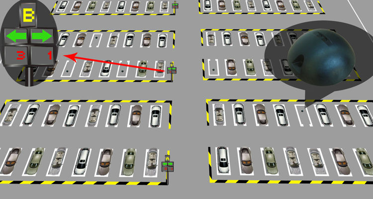

Smart Waste Management | Smart Parking Lots | Traffic Control System

Smart Waste Management: One of the more active areas of smart city innovation involves IoT-based waste management. These solutions are designed to optimize waste collection processes, reduce the operational costs, and increase the efficiency of waste management as well as mitigate environmental issues related to waste disposal efforts. For example, waste containers equipped with level sensors automatically notify a centralized waste management platform when waste levels are exceeded; this in turn dispatches a truck driver via smartphone to service the containers. TO TOP |
| 
Smart Parking Lots: Many smart cities have implemented intelligent parking solutions capable of monitoring for available public parking spaces. By using underground sensors to detect whether a parking space is occupied, cities can save drivers the hassle of hunting for parking spaces, while reducing emissions and traffic. Users can typically access parking notifications and guidance via a smartphone app and/or website; more commonly, the technology is used for displays in multi-level parking structures.Smart parking system vendors are currently experiencing a sharp decrease in demand due to the ongoing pandemic, with extended lockdown measures and steep drops in traffic to blameTO TOP |
|
Traffic Control System : To reduce the waste in time and money caused by traffic delays, many city governments are leveraging IoT to automate and optimize the city’s traffic control systems. These solutions typically consist of a network of sensors installed at intersections for measuring traffic volume and adjusting stop-and-go times accordingly. For example, Pittsburgh, Pennsylvania is deploying smart traffic signals at one-third of its 610 intersections. Since starting the project, the city has experienced a 41% decrease in intersection wait times and 21% percent reduction in vehicle emissions. Cities like Dallas are also implementing IoT-enabled traffic management systems for improving road congestion management efforts. The global intelligent traffic management system market size in 2020 was valued at $9.12 billion and is expected to increase at a CAGR of 11.9% from 2021 to 2028, according to Grand View Research. The ongoing pandemic and its impact on drivers and commuters has severely impacted global demand for traffic management systems.TO TOP |
|
Smart Utility Meteres : Utility companies serving municipalities are installing IoT-based solutions for automating and optimizing city-wide energy use. For example, smart meters attached to city buildings are connected to a smart energy grid and enable the utility company to track energy consumption, improve energy flow management, and more. This also enables them to carry out administration operations remotely, such as disconnecting service, implementing new pricing, installing new load management programs, and troubleshooting local power infrastructure. Additionally, they allow the utility company to pinpoint exact outage locations and restore operations faster and more efficiently.TO TOP |
|
Smart Lighting System : IoT-based connected lighting is another highly active smart city domain that helps municipalities increase energy efficiency and reduce energy and maintenance costs. Smart lights automatically adjust their brightness levels based on street activity as well as transmit maintenance data to anticipate outages and enable faster response times. Chicago projects that its connected street light program will result in an annual savings of $10 million in energy costs. Miami has some of the most connected street lights in the world — an achievement that has saved the city 44% in energy costs annually, compared to traditional street lights. Paris recently retrofitted its aging streetlight infrastructure with 280,000 connected IPv6-based LED streetlights. Using a Wi-SUN Alliance-supported IEEE 802.15.4 wireless RF mesh architecture, the connected streetlights were implemented as network-as-a-service deployments, saving the city 70% on annual streetlight energy costs. Aside from smart street lighting scenarios, increased use of smart lighting in security use cases and for reducing overall power consumption are some key factors behind the increase in the global smart lighting market.TO TOP |